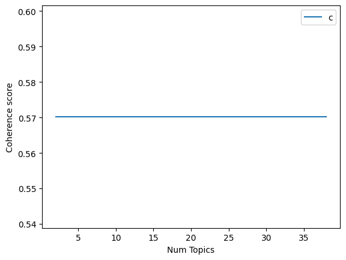

Load the dataset#
from google.colab import drive
import pandas as pd
drive.mount('/content/drive')
path = '/content/drive/MyDrive/Semester 7/PPW/hasil_preprocessing_berita.csv'
data = pd.read_csv(path, on_bad_lines='skip')
data.head()
---------------------------------------------------------------------------
ModuleNotFoundError Traceback (most recent call last)
Cell In[1], line 1
----> 1 from google.colab import drive
2 import pandas as pd
4 drive.mount('/content/drive')
ModuleNotFoundError: No module named 'google.colab'
data_text = data[:300000][['Tokenisasi Akhir']]
data_text.head()
| Tokenisasi Akhir | |
|---|---|
| 0 | ['alfamart', 'kembali', 'gelar', 'aksi', 'dono... |
| 1 | ['menteri', 'koordinator', 'bidang', 'hukum', ... |
| 2 | ['gubernur', 'sumatera', 'utara', 'sumut', 'bo... |
| 3 | ['dukung', 'plt', 'ketua', 'umum', 'partai', '... |
| 4 | ['bagi', 'guna', 'whoosh', 'rute', 'jakartaban... |
data_text['index'] = data_text.index
documents = data_text
documents.head()
| Tokenisasi Akhir | index | |
|---|---|---|
| 0 | ['alfamart', 'kembali', 'gelar', 'aksi', 'dono... | 0 |
| 1 | ['menteri', 'koordinator', 'bidang', 'hukum', ... | 1 |
| 2 | ['gubernur', 'sumatera', 'utara', 'sumut', 'bo... | 2 |
| 3 | ['dukung', 'plt', 'ketua', 'umum', 'partai', '... | 3 |
| 4 | ['bagi', 'guna', 'whoosh', 'rute', 'jakartaban... | 4 |
len(documents)
200
Data Preprocessing#
!pip install gensim
Requirement already satisfied: gensim in /usr/local/lib/python3.12/dist-packages (4.3.3)
Requirement already satisfied: numpy<2.0,>=1.18.5 in /usr/local/lib/python3.12/dist-packages (from gensim) (1.26.4)
Requirement already satisfied: scipy<1.14.0,>=1.7.0 in /usr/local/lib/python3.12/dist-packages (from gensim) (1.13.1)
Requirement already satisfied: smart-open>=1.8.1 in /usr/local/lib/python3.12/dist-packages (from gensim) (7.3.1)
Requirement already satisfied: wrapt in /usr/local/lib/python3.12/dist-packages (from smart-open>=1.8.1->gensim) (1.17.3)
!pip install gensim nltk
Requirement already satisfied: gensim in /usr/local/lib/python3.12/dist-packages (4.3.3)
Requirement already satisfied: nltk in /usr/local/lib/python3.12/dist-packages (3.9.1)
Requirement already satisfied: numpy<2.0,>=1.18.5 in /usr/local/lib/python3.12/dist-packages (from gensim) (1.26.4)
Requirement already satisfied: scipy<1.14.0,>=1.7.0 in /usr/local/lib/python3.12/dist-packages (from gensim) (1.13.1)
Requirement already satisfied: smart-open>=1.8.1 in /usr/local/lib/python3.12/dist-packages (from gensim) (7.3.1)
Requirement already satisfied: click in /usr/local/lib/python3.12/dist-packages (from nltk) (8.3.0)
Requirement already satisfied: joblib in /usr/local/lib/python3.12/dist-packages (from nltk) (1.5.2)
Requirement already satisfied: regex>=2021.8.3 in /usr/local/lib/python3.12/dist-packages (from nltk) (2024.11.6)
Requirement already satisfied: tqdm in /usr/local/lib/python3.12/dist-packages (from nltk) (4.67.1)
Requirement already satisfied: wrapt in /usr/local/lib/python3.12/dist-packages (from smart-open>=1.8.1->gensim) (1.17.3)
import gensim
from gensim.utils import simple_preprocess
from nltk.corpus import stopwords
from nltk.stem.porter import *
import numpy as np
import nltk
nltk.download('wordnet')
[nltk_data] Downloading package wordnet to /root/nltk_data...
True
def lemmatize_stemming(text):
return stemmer.stem(WordNetLemmatizer().lemmatize(text, pos='v'))
def preprocess(text):
result=[]
for token in gensim.utils.simple_preprocess(text) :
if token not in stopwords.words('english') and len(token) > 3:
result.append(lemmatize_stemming(token))
return result
print(documents.head())
print(len(documents))
Tokenisasi Akhir index
0 ['alfamart', 'kembali', 'gelar', 'aksi', 'dono... 0
1 ['menteri', 'koordinator', 'bidang', 'hukum', ... 1
2 ['gubernur', 'sumatera', 'utara', 'sumut', 'bo... 2
3 ['dukung', 'plt', 'ketua', 'umum', 'partai', '... 3
4 ['bagi', 'guna', 'whoosh', 'rute', 'jakartaban... 4
200
print(documents.columns)
print(documents.head())
Index(['Tokenisasi Akhir', 'index'], dtype='object')
Tokenisasi Akhir index
0 ['alfamart', 'kembali', 'gelar', 'aksi', 'dono... 0
1 ['menteri', 'koordinator', 'bidang', 'hukum', ... 1
2 ['gubernur', 'sumatera', 'utara', 'sumut', 'bo... 2
3 ['dukung', 'plt', 'ketua', 'umum', 'partai', '... 3
4 ['bagi', 'guna', 'whoosh', 'rute', 'jakartaban... 4
!ls "/content/drive/MyDrive/Semester 7/PPW"
berita_detik.csv 'mencoba .ipynb'
berita_detik.gsheet Prepocesing_PTA.ipynb
berita_detik_label_otomatis.csv Prepocessing-Berita-fiks.ipynb
Berita.ipynb Prepocessing_Berita.ipynb
craw.ipynb pta_all.csv
Crawlling.ipynb pta.csv
Crawlling-PTA.ipynb pta_links.csv
'hasil_preprocessing (1).gsheet' 'TF-IDF dan Word Embedding Berita.ipynb'
hasil_preprocessing_berita.csv tfidf_matrix.csv
hasil_preprocessing.csv 'Tugas 6.ipynb'
hasil_preprocessing.gsheet
import pandas as pd
from google.colab import drive
# 1️⃣ Sambungkan ke Google Drive
drive.mount('/content/drive')
# 2️⃣ Ganti path ini sesuai lokasi file kamu
path = '/content/drive/MyDrive/Semester 7/PPW/hasil_preprocessing_berita.csv'
# 3️⃣ Baca file CSV
data = pd.read_csv(path)
# 4️⃣ Lihat kolom apa saja yang ada
print("Kolom yang tersedia:", data.columns.tolist())
print(data.head())
Drive already mounted at /content/drive; to attempt to forcibly remount, call drive.mount("/content/drive", force_remount=True).
Kolom yang tersedia: ['Teks Asli', 'Setelah Stopword Removal', 'Setelah Cleaning', 'Setelah Normalisasi', 'Setelah Stemming', 'Tokenisasi Akhir']
Teks Asli \
0 alfamart kembali menggelar aksi donor darah se...
1 menteri koordinator bidang hukum, ham, imigras...
2 gubernur sumatera utara (sumut) bobby nasution...
3 dukungan untuk plt ketua umum partai persatuan...
4 bagi pengguna whoosh rute jakarta-bandung atau...
Setelah Stopword Removal \
0 ['alfamart', 'kembali', 'menggelar', 'aksi', '...
1 ['menteri', 'koordinator', 'bidang', 'hukum,',...
2 ['gubernur', 'sumatera', 'utara', '(sumut)', '...
3 ['dukungan', 'plt', 'ketua', 'umum', 'partai',...
4 ['bagi', 'pengguna', 'whoosh', 'rute', 'jakart...
Setelah Cleaning \
0 ['alfamart', 'kembali', 'menggelar', 'aksi', '...
1 ['menteri', 'koordinator', 'bidang', 'hukum', ...
2 ['gubernur', 'sumatera', 'utara', 'sumut', 'bo...
3 ['dukungan', 'plt', 'ketua', 'umum', 'partai',...
4 ['bagi', 'pengguna', 'whoosh', 'rute', 'jakart...
Setelah Normalisasi \
0 ['alfamart', 'kembali', 'menggelar', 'aksi', '...
1 ['menteri', 'koordinator', 'bidang', 'hukum', ...
2 ['gubernur', 'sumatera', 'utara', 'sumut', 'bo...
3 ['dukungan', 'plt', 'ketua', 'umum', 'partai',...
4 ['bagi', 'pengguna', 'whoosh', 'rute', 'jakart...
Setelah Stemming \
0 ['alfamart', 'kembali', 'gelar', 'aksi', 'dono...
1 ['menteri', 'koordinator', 'bidang', 'hukum', ...
2 ['gubernur', 'sumatera', 'utara', 'sumut', 'bo...
3 ['dukung', 'plt', 'ketua', 'umum', 'partai', '...
4 ['bagi', 'guna', 'whoosh', 'rute', 'jakartaban...
Tokenisasi Akhir
0 ['alfamart', 'kembali', 'gelar', 'aksi', 'dono...
1 ['menteri', 'koordinator', 'bidang', 'hukum', ...
2 ['gubernur', 'sumatera', 'utara', 'sumut', 'bo...
3 ['dukung', 'plt', 'ketua', 'umum', 'partai', '...
4 ['bagi', 'guna', 'whoosh', 'rute', 'jakartaban...
documents = pd.DataFrame()
documents['index'] = data.index
documents['text'] = data['Tokenisasi Akhir'] # ganti 'text' sesuai nama kolom di file kamu
print(documents.head())
print(len(documents))
index text
0 0 ['alfamart', 'kembali', 'gelar', 'aksi', 'dono...
1 1 ['menteri', 'koordinator', 'bidang', 'hukum', ...
2 2 ['gubernur', 'sumatera', 'utara', 'sumut', 'bo...
3 3 ['dukung', 'plt', 'ketua', 'umum', 'partai', '...
4 4 ['bagi', 'guna', 'whoosh', 'rute', 'jakartaban...
200
documents = pd.DataFrame()
documents['index'] = data.index
documents['text'] = data['Tokenisasi Akhir'] # atau ganti ke 'Tokenisasi Akhir' kalau mau teks hasil preprocessing
print(documents.head())
print(type(documents.loc[0, 'text']))
index text
0 0 ['alfamart', 'kembali', 'gelar', 'aksi', 'dono...
1 1 ['menteri', 'koordinator', 'bidang', 'hukum', ...
2 2 ['gubernur', 'sumatera', 'utara', 'sumut', 'bo...
3 3 ['dukung', 'plt', 'ketua', 'umum', 'partai', '...
4 4 ['bagi', 'guna', 'whoosh', 'rute', 'jakartaban...
<class 'str'>
from nltk.stem import WordNetLemmatizer
from nltk.stem.porter import PorterStemmer
!pip install Sastrawi
Collecting Sastrawi
Downloading Sastrawi-1.0.1-py2.py3-none-any.whl.metadata (909 bytes)
Downloading Sastrawi-1.0.1-py2.py3-none-any.whl (209 kB)
?25l ━━━━━━━━━━━━━━━━━━━━━━━━━━━━━━━━━━━━━━━━ 0.0/209.7 kB ? eta -:--:--
━━━━━━━━━━━━━━━━━━━━━━━━━━━━━━━━━━━━━━━━ 209.7/209.7 kB 12.9 MB/s eta 0:00:00
?25hInstalling collected packages: Sastrawi
Successfully installed Sastrawi-1.0.1
import nltk
nltk.download('punkt_tab')
[nltk_data] Downloading package punkt_tab to /root/nltk_data...
[nltk_data] Unzipping tokenizers/punkt_tab.zip.
True
from Sastrawi.Stemmer.StemmerFactory import StemmerFactory
from nltk.corpus import stopwords
from nltk.tokenize import word_tokenize
factory = StemmerFactory()
stemmer = factory.create_stemmer()
stop_words = set(stopwords.words('indonesian'))
def preprocess(text):
result = []
tokens = word_tokenize(text.lower())
for token in tokens:
if token.isalpha() and token not in stop_words:
result.append(stemmer.stem(token))
return result
document_num = 150
doc_sample = documents.loc[documents['index'] == document_num, 'text'].values[0]
print("Original document:")
words = doc_sample.split(' ')
print(words)
print("\nTokenized and lemmatized document:")
print(preprocess(doc_sample))
Original document:
["['mahkamah',", "'konstitusi',", "'mk',", "'terima',", "'gugat',", "'kait',", "'mungut',", "'suara',", "'ulang',", "'pilbup',", "'barito',", "'utara',", "'tahun',", "'nyata',", "'mohon',", "'penuh',", "'tentu',", "'tentang',", "'duduk',", "'mohon',", "'dalam',", "'aju',", "'mohon',", "'mk',", "'adil',", "'dalam',", "'pokok',", "'mohon',", "'nyata',", "'mohon',", "'mohon',", "'terima',", "'kata',", "'ketua',", "'suhartoyo',", "'saat',", "'baca',", "'putus',", "'dalam',", "'sidang',", "'rabu',", "'mohon',", "'dalam',", "'perkara',", "'pasang',", "'calon',", "'paslon',", "'pilbup',", "'barito',", "'utara',", "'kalimantan',", "'tengah',", "'jimmy',", "'carter',", "'inriaty',", "'karawaheni',", "'rupa',", "'paslon',", "'nomor',", "'urut',", "'mohon',", "'dalam',", "'perkara',", "'kpu',", "'kabupaten',", "'barito',", "'utara',", "'sedang',", "'pihak',", "'kait',", "'paslon',", "'nomor',", "'urut',", "'salahudin',", "'felix',", "'sonadie',", "'scroll',", "'continue',", "'with',", "'content',", "'dalam',", "'mohon',", "'mohon',", "'berat',", "'kpu',", "'kabupaten',", "'barito',", "'utara',", "'bagi',", "'formulir',", "'model',", "'kena',", "'psu',", "'wilayah',", "'rupa',", "'basis',", "'pilih',", "'mohon',", "'turut',", "'mk',", "'kpu',", "'laku',", "'langgar',", "'hak',", "'pilih',", "'warga',", "'dasar',", "'timbang',", "'hukum',", "'atas',", "'mahkamah',", "'dapat',", "'dalil',", "'mohon',", "'kena',", "'tindak',", "'kpu',", "'kabupaten',", "'barito',", "'utara',", "'distribusi',", "'formulir',", "'model',", "'cpemberitahuankwk',", "'cara',", "'masif',", "'serta',", "'tanpa',", "'serta',", "'alas',", "'jelas',", "'khusus',", "'wilayah',", "'rupa',", "'basis',", "'pilih',", "'danatau',", "'simpatisan',", "'mohon',", "'sehingga',", "'langgar',", "'hak',", "'pilih',", "'warga',", "'negara',", "'alas',", "'turut',", "'hukum',", "'kata',", "'hakim',", "'daniel',", "'yusmic',", "'foekh',", "'nyata',", "'dapat',", "'jadi',", "'khusus',", "'cedera',", "'selenggara',", "'milu',", "'bupati',", "'wabup',", "'barito',", "'utara',", "'tahun',", "'oleh',", "'itu',", "'samping',", "'seluruh',", "'mohon',", "'jimmy',", "'inriaty',", "'lebih',", "'lanjut',", "'kata',", "'mohon',", "'jimmy',", "'inriaty',", "'penuh',", "'syarat',", "'duduk',", "'mohon',", "'bagaimana',", "'atur',", "'dalam',", "'pun',", "'nyata',", "'mohon',", "'jimmyinriaty',", "'dapat',", "'terima',", "'timbang',", "'bahwa',", "'dasar',", "'seluruh',", "'urai',", "'timbang',", "'hukum',", "'mohon',", "'mohon',", "'penuh',", "'tentu',", "'pasal',", "'ayat',", "'huruf',", "'kena',", "'duduk',", "'hukum',", "'andai',", "'tentu',", "'sebut',", "'samping',", "'quad',", "'non',", "'nyata',", "'dalil',", "'pokok',", "'mohon',", "'mohon',", "'alas',", "'turut',", "'hukum',", "'ucap',", "'hakim',", "'daniel',", "'simak',", "'video',", "'kpu',", "'daerah',", "'telah',", "'gelar',", "'psu',", "'wilayah',", "'bakal',", "'coblos',", "'ulang',", "'agustus',", "'gambasvideo',", "'detik']"]
Tokenized and lemmatized document:
[]
processed_docs = documents['text'].map(preprocess)
processed_docs[:10]
| text | |
|---|---|
| 0 | [] |
| 1 | [] |
| 2 | [] |
| 3 | [] |
| 4 | [] |
| 5 | [] |
| 6 | [] |
| 7 | [] |
| 8 | [] |
| 9 | [g] |
#Get a BOW Dict from data
dictionary = gensim.corpora.Dictionary(processed_docs)
count = 0
for k, v in dictionary.items():
print(k, v)
count += 1
if count > 10:
break
0 g
1 v
2 b
3 p
4 f
5 k
6 w
#filter the dict
dictionary.filter_extremes(no_below=15, no_above=0.1, keep_n=100000)
#Convert document into BOW format by doc2bow
bow_corpus = [dictionary.doc2bow(doc) for doc in processed_docs]
bow_doc_4310 = bow_corpus[document_num]
for i in range(len(bow_doc_4310)):
print("Word {} (\"{}\") appears {} time.".format(bow_doc_4310[i][0],
dictionary[bow_doc_4310[i][0]],
bow_doc_4310[i][1]))
#TF-IDF on our document set
tfidf = gensim.models.TfidfModel(bow_corpus)
corpus_tfidf = tfidf[bow_corpus]
for doc in corpus_tfidf:
print(doc)
break
[]
#Running LDA using Bag of Words data
lda_model = gensim.models.LdaMulticore(bow_corpus,
num_topics=10,
id2word = dictionary,
passes = 2,
workers=2)
WARNING:gensim.models.ldamulticore:too few updates, training might not converge; consider increasing the number of passes or iterations to improve accuracy
for idx, topic in lda_model.print_topics():
print("Topic: {} \nWords: {}".format(idx, topic))
print("\n")
Topic: 0
Words: 0.143*"p" + 0.143*"g" + 0.143*"w" + 0.143*"f" + 0.143*"b" + 0.143*"v" + 0.143*"k"
Topic: 1
Words: 0.547*"w" + 0.204*"p" + 0.050*"b" + 0.050*"g" + 0.050*"v" + 0.050*"f" + 0.050*"k"
Topic: 2
Words: 0.143*"p" + 0.143*"b" + 0.143*"g" + 0.143*"f" + 0.143*"v" + 0.143*"w" + 0.143*"k"
Topic: 3
Words: 0.647*"v" + 0.059*"p" + 0.059*"b" + 0.059*"f" + 0.059*"w" + 0.059*"g" + 0.059*"k"
Topic: 4
Words: 0.869*"k" + 0.077*"p" + 0.011*"b" + 0.011*"g" + 0.011*"f" + 0.011*"v" + 0.011*"w"
Topic: 5
Words: 0.647*"g" + 0.059*"p" + 0.059*"b" + 0.059*"w" + 0.059*"v" + 0.059*"f" + 0.059*"k"
Topic: 6
Words: 0.647*"f" + 0.059*"p" + 0.059*"b" + 0.059*"g" + 0.059*"w" + 0.059*"v" + 0.059*"k"
Topic: 7
Words: 0.647*"b" + 0.059*"p" + 0.059*"w" + 0.059*"v" + 0.059*"g" + 0.059*"f" + 0.059*"k"
Topic: 8
Words: 0.143*"p" + 0.143*"w" + 0.143*"g" + 0.143*"b" + 0.143*"v" + 0.143*"f" + 0.143*"k"
Topic: 9
Words: 0.874*"p" + 0.021*"v" + 0.021*"b" + 0.021*"w" + 0.021*"g" + 0.021*"k" + 0.021*"f"
#Topic coherence
from gensim.models import CoherenceModel
coherence_model_lda = CoherenceModel(model=lda_model, texts=processed_docs, dictionary=dictionary, coherence='c_v')
coherence_lda = coherence_model_lda.get_coherence()
print('\nCoherence Score: ', coherence_lda)
Coherence Score: 0.5702175402921048
from gensim.models import CoherenceModel
coherence_model_lda = CoherenceModel(model=lda_model, texts=processed_docs, dictionary=dictionary, coherence="u_mass")
coherence_lda = coherence_model_lda.get_coherence()
print('\nCoherence Score: ', coherence_lda)
Coherence Score: -22.615204052180886
#find the optimal number of topics
def compute_coherence_values(dictionary, corpus, texts, limit, start=2, step=3):
coherence_values = []
model_list = []
for num_topics in range(start, limit, step):
model=gensim.models.LdaMulticore(corpus=corpus, id2word=dictionary, num_topics=num_topics)
model_list.append(model)
coherencemodel = CoherenceModel(model=model, texts=texts, dictionary=dictionary, coherence='c_v')
coherence_values.append(coherencemodel.get_coherence())
return model_list, coherence_values
model_list, coherence_values = compute_coherence_values(dictionary=dictionary, corpus=bow_corpus, texts=processed_docs, start=2, limit=40, step=6)
WARNING:gensim.models.ldamulticore:too few updates, training might not converge; consider increasing the number of passes or iterations to improve accuracy
WARNING:gensim.models.ldamulticore:too few updates, training might not converge; consider increasing the number of passes or iterations to improve accuracy
WARNING:gensim.models.ldamulticore:too few updates, training might not converge; consider increasing the number of passes or iterations to improve accuracy
WARNING:gensim.models.ldamulticore:too few updates, training might not converge; consider increasing the number of passes or iterations to improve accuracy
WARNING:gensim.models.ldamulticore:too few updates, training might not converge; consider increasing the number of passes or iterations to improve accuracy
WARNING:gensim.models.ldamulticore:too few updates, training might not converge; consider increasing the number of passes or iterations to improve accuracy
WARNING:gensim.models.ldamulticore:too few updates, training might not converge; consider increasing the number of passes or iterations to improve accuracy
import matplotlib.pyplot as plt
limit=40; start=2; step=6;
x = range(start, limit, step)
plt.plot(x, coherence_values)
plt.xlabel("Num Topics")
plt.ylabel("Coherence score")
plt.legend(("coherence_values"), loc='best')
plt.show()
#seem

#Running LDA using TF-IDF
lda_model_tfidf = gensim.models.LdaMulticore(corpus_tfidf,
num_topics=10,
id2word = dictionary,
passes = 2,
workers=4)
WARNING:gensim.models.ldamulticore:too few updates, training might not converge; consider increasing the number of passes or iterations to improve accuracy
/usr/local/lib/python3.12/dist-packages/gensim/models/ldamodel.py:847: RuntimeWarning: invalid value encountered in scalar divide
perwordbound = self.bound(chunk, subsample_ratio=subsample_ratio) / (subsample_ratio * corpus_words)
for idx, topic in lda_model_tfidf.print_topics(-1):
print("Topic: {} Word: {}".format(idx, topic))
print("\n")
Topic: 0 Word: 0.143*"g" + 0.143*"v" + 0.143*"b" + 0.143*"p" + 0.143*"f" + 0.143*"k" + 0.143*"w"
Topic: 1 Word: 0.143*"g" + 0.143*"v" + 0.143*"b" + 0.143*"p" + 0.143*"f" + 0.143*"k" + 0.143*"w"
Topic: 2 Word: 0.143*"g" + 0.143*"v" + 0.143*"b" + 0.143*"p" + 0.143*"f" + 0.143*"k" + 0.143*"w"
Topic: 3 Word: 0.143*"g" + 0.143*"v" + 0.143*"b" + 0.143*"p" + 0.143*"f" + 0.143*"k" + 0.143*"w"
Topic: 4 Word: 0.143*"g" + 0.143*"v" + 0.143*"b" + 0.143*"p" + 0.143*"f" + 0.143*"k" + 0.143*"w"
Topic: 5 Word: 0.143*"g" + 0.143*"v" + 0.143*"b" + 0.143*"p" + 0.143*"f" + 0.143*"k" + 0.143*"w"
Topic: 6 Word: 0.143*"g" + 0.143*"v" + 0.143*"b" + 0.143*"p" + 0.143*"f" + 0.143*"k" + 0.143*"w"
Topic: 7 Word: 0.143*"g" + 0.143*"v" + 0.143*"b" + 0.143*"p" + 0.143*"f" + 0.143*"k" + 0.143*"w"
Topic: 8 Word: 0.143*"g" + 0.143*"v" + 0.143*"b" + 0.143*"p" + 0.143*"f" + 0.143*"k" + 0.143*"w"
Topic: 9 Word: 0.143*"g" + 0.143*"v" + 0.143*"b" + 0.143*"p" + 0.143*"f" + 0.143*"k" + 0.143*"w"
from gensim.models import CoherenceModel
coherence_model_lda_idf = CoherenceModel(model=lda_model_tfidf, texts=processed_docs, dictionary=dictionary, coherence='c_v')
coherence_model_lda_idf = coherence_model_lda_idf.get_coherence()
print('\nCoherence Score: ', coherence_model_lda_idf)
Coherence Score: 0.5702175402921047
#classifying sample document using LDA Bag of Words model
#original Text of sample document 4310
processed_docs[document_num]
[]
for index, score in sorted(lda_model[bow_corpus[document_num]], key=lambda tup: tup[1], reverse=True):
print("\nScore: {}\t Topic: {}".format(score, lda_model.print_topic(index, 5)))
Score: 0.10000000149011612 Topic: 0.143*"p" + 0.143*"g" + 0.143*"w" + 0.143*"f" + 0.143*"b"
Score: 0.10000000149011612 Topic: 0.547*"w" + 0.204*"p" + 0.050*"b" + 0.050*"g" + 0.050*"v"
Score: 0.10000000149011612 Topic: 0.143*"p" + 0.143*"b" + 0.143*"g" + 0.143*"f" + 0.143*"v"
Score: 0.10000000149011612 Topic: 0.647*"v" + 0.059*"p" + 0.059*"b" + 0.059*"f" + 0.059*"w"
Score: 0.10000000149011612 Topic: 0.869*"k" + 0.077*"p" + 0.011*"b" + 0.011*"g" + 0.011*"f"
Score: 0.10000000149011612 Topic: 0.647*"g" + 0.059*"p" + 0.059*"b" + 0.059*"w" + 0.059*"v"
Score: 0.10000000149011612 Topic: 0.647*"f" + 0.059*"p" + 0.059*"b" + 0.059*"g" + 0.059*"w"
Score: 0.10000000149011612 Topic: 0.647*"b" + 0.059*"p" + 0.059*"w" + 0.059*"v" + 0.059*"g"
Score: 0.10000000149011612 Topic: 0.143*"p" + 0.143*"w" + 0.143*"g" + 0.143*"b" + 0.143*"v"
Score: 0.10000000149011612 Topic: 0.874*"p" + 0.021*"v" + 0.021*"b" + 0.021*"w" + 0.021*"g"
lda_model[bow_corpus[document_num]]
[(0, 0.1),
(1, 0.1),
(2, 0.1),
(3, 0.1),
(4, 0.1),
(5, 0.1),
(6, 0.1),
(7, 0.1),
(8, 0.1),
(9, 0.1)]
sorted(lda_model[bow_corpus[document_num]], key=lambda tup: tup[1], reverse=True)
[(0, 0.1),
(1, 0.1),
(2, 0.1),
(3, 0.1),
(4, 0.1),
(5, 0.1),
(6, 0.1),
(7, 0.1),
(8, 0.1),
(9, 0.1)]
lda_model.print_topic(index, 10)
'0.874*"p" + 0.021*"v" + 0.021*"b" + 0.021*"w" + 0.021*"g" + 0.021*"k" + 0.021*"f"'
#classifying sample document using LDA TF-IDF model##
for index, score in sorted(lda_model_tfidf[bow_corpus[document_num]], key=lambda tup: tup[1], reverse=True):
print("\nScore: {}\t Topic: {}".format(score, lda_model_tfidf.print_topic(index, 5)))
Score: 0.10000000149011612 Topic: 0.143*"f" + 0.143*"p" + 0.143*"k" + 0.143*"g" + 0.143*"b"
Score: 0.10000000149011612 Topic: 0.143*"f" + 0.143*"p" + 0.143*"k" + 0.143*"g" + 0.143*"b"
Score: 0.10000000149011612 Topic: 0.143*"f" + 0.143*"p" + 0.143*"k" + 0.143*"g" + 0.143*"b"
Score: 0.10000000149011612 Topic: 0.143*"f" + 0.143*"p" + 0.143*"k" + 0.143*"g" + 0.143*"b"
Score: 0.10000000149011612 Topic: 0.143*"f" + 0.143*"p" + 0.143*"k" + 0.143*"g" + 0.143*"b"
Score: 0.10000000149011612 Topic: 0.143*"f" + 0.143*"p" + 0.143*"k" + 0.143*"g" + 0.143*"b"
Score: 0.10000000149011612 Topic: 0.143*"f" + 0.143*"p" + 0.143*"k" + 0.143*"g" + 0.143*"b"
Score: 0.10000000149011612 Topic: 0.143*"f" + 0.143*"p" + 0.143*"k" + 0.143*"g" + 0.143*"b"
Score: 0.10000000149011612 Topic: 0.143*"f" + 0.143*"p" + 0.143*"k" + 0.143*"g" + 0.143*"b"
Score: 0.10000000149011612 Topic: 0.143*"f" + 0.143*"p" + 0.143*"k" + 0.143*"g" + 0.143*"b"
#Testing model on unseen document
unseen_document = "My name is Fentryca."
bow_vector = dictionary.doc2bow(preprocess(unseen_document))
for index, score in sorted(lda_model[bow_vector], key=lambda tup: tup[1], reverse=True):
print("Score: {}\t Topic: {}".format(score, lda_model.print_topic(index, 5)))
Score: 0.10000000149011612 Topic: 0.143*"p" + 0.143*"g" + 0.143*"w" + 0.143*"f" + 0.143*"b"
Score: 0.10000000149011612 Topic: 0.547*"w" + 0.204*"p" + 0.050*"b" + 0.050*"g" + 0.050*"v"
Score: 0.10000000149011612 Topic: 0.143*"p" + 0.143*"b" + 0.143*"g" + 0.143*"f" + 0.143*"v"
Score: 0.10000000149011612 Topic: 0.647*"v" + 0.059*"p" + 0.059*"b" + 0.059*"f" + 0.059*"w"
Score: 0.10000000149011612 Topic: 0.869*"k" + 0.077*"p" + 0.011*"b" + 0.011*"g" + 0.011*"f"
Score: 0.10000000149011612 Topic: 0.647*"g" + 0.059*"p" + 0.059*"b" + 0.059*"w" + 0.059*"v"
Score: 0.10000000149011612 Topic: 0.647*"f" + 0.059*"p" + 0.059*"b" + 0.059*"g" + 0.059*"w"
Score: 0.10000000149011612 Topic: 0.647*"b" + 0.059*"p" + 0.059*"w" + 0.059*"v" + 0.059*"g"
Score: 0.10000000149011612 Topic: 0.143*"p" + 0.143*"w" + 0.143*"g" + 0.143*"b" + 0.143*"v"
Score: 0.10000000149011612 Topic: 0.874*"p" + 0.021*"v" + 0.021*"b" + 0.021*"w" + 0.021*"g"